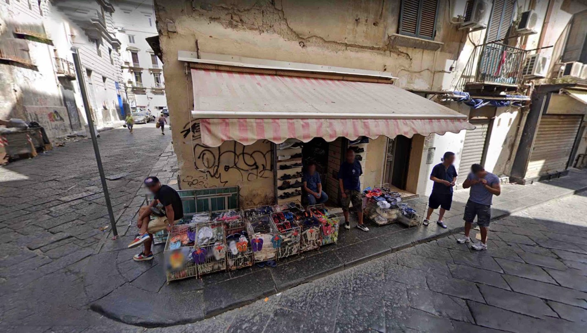
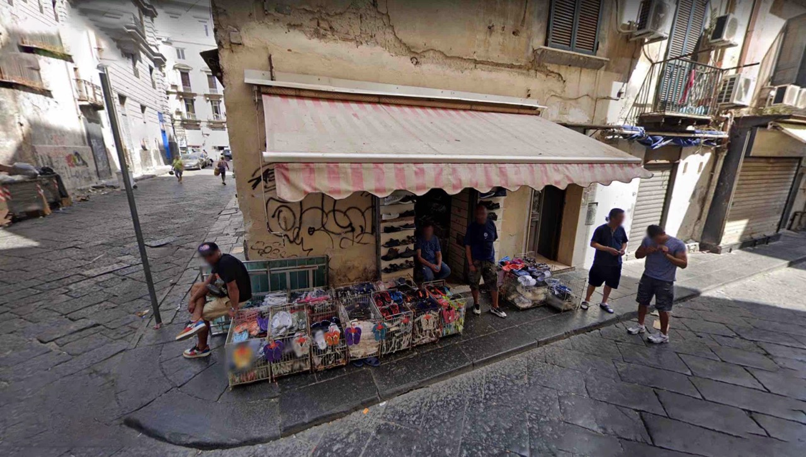
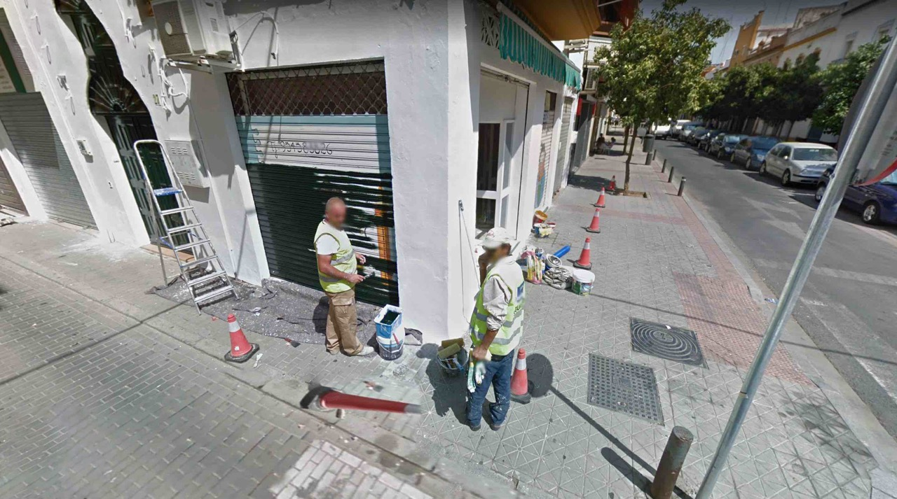
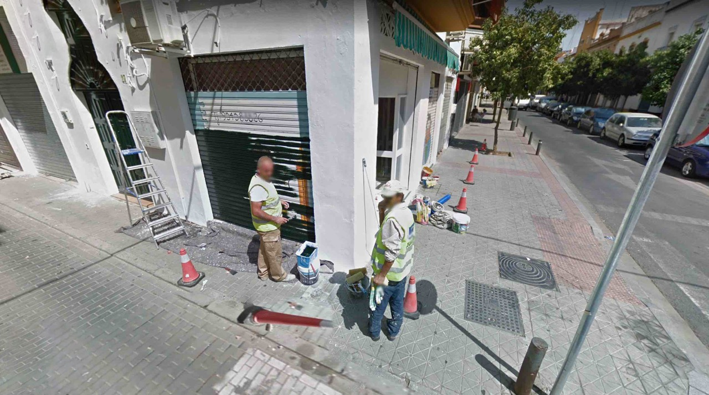

📷
Google Maps
2016-ongoing
This is a collection of screenshots taken from Google Maps.
While these scenes already existed as a tool for directions on Google maps,
choosing which images to screenshot and display felt no different than taking photos of scenes that actually surrounded me.
It allowed me to travel the world virtually in a time when virtual reality did not exist the way it does today..
 


 
